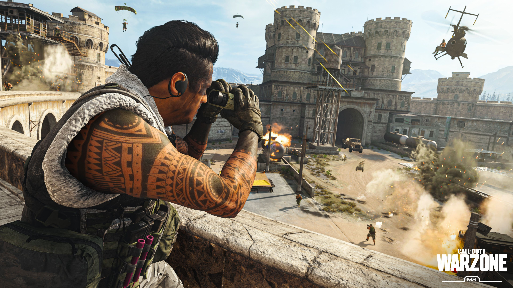

Call of Duty: Warzone
Even before the Call of Duty: Vanguard integration, Warzone was notorious for being complex. It had over 100 weapons to choose from, each with 50+ attachments, along with a slew of perks, and gameplay mechanics that were tricky to master.
Now, Vanguard weapons have been folded into Warzone as part of the integration, bringing the total number of firearms to a staggering 163, most of which have 70 attachments (and 10 slots to assign them). It also introduces a new map called Caldera, replacing the nearly two-year-old Verdansk, but with its fair share of bugs and performance issues.The result is a complicated mess that shows potential, while constantly getting in its own way.
Everything in moderation
The promise of so much content is — on the surface — appealing, especially since it’s all free. More, more, more! But even as a dedicated player, I found myself overwhelmed with the amount of content, particularly with regards to its weapons. In the game’s current state, most of the community is still working on leveling up the new Vanguard weapons, and the process is painfully slow.
A weapon’s performance goes hand-in-hand with its attachments, and of course, most of the best ones are locked to the end of a gun’s leveling path. In other words, you’re forced to reach max level with a weapon so you have a higher chance of winning firefights against opponents. Sure, skill is the most important factor, but you’ll be at a disadvantage if you don’t have the right attachments applied to your weapon.
It’s a process that is nearly impossible to keep up with unless you have dozens of hours each week to spend leveling up your weapons.
Unfortunately, the complexity doesn’t stop there. It’s not enough to simply have all the attachments for a weapon unlocked. Knowing which ones to use also poses a problem, as the in-game stats are usually mediocre at best, and aren’t indicative of what an attachment can do. For instance, certain magazine attachments boost damage but decrease fire rate. The in-game stats for this attachment simply show that it boosts damage, but since it doesn’t give you any indication of time to kill (TTK), a player might be misled into picking this magazine type even though it kills slower.
Beyond that, there isn’t an effective way to compare two weapons, making it tough to know which one is better. What ultimately ends up happening is that you’ll use what you think is best, only to discover there’s an entirely different setup you should have been using the entire time. Then Raven Software will release a patch that nerfs it — though don’t expect detailed or accurate patch notes to describe what changes were made. From there, it’s up to hard-working YouTubers like True Game Data or JGOD to manually test everything tied to an update — which is becoming increasingly taxing since there are so many weapons and attachments. Spoilers: Most of the time, there are other hidden changes that weren’t mentioned in the patch notes.
It’s a terrible cycle that involves spending hours grinding weapon attachments, then an update nerfs the gun you spent so much time working on, and you have to repeat the cycle. It’s a process that is nearly impossible to keep up with unless you have dozens of hours each week to spend leveling up your weapons. To the casual player, this isn’t feasible. And even for dedicated players, the weapon leveling is so slow that it’s still near-impossible to stay up to date with the current meta.
When you combine the sheer number of weapons and attachments, the vague patch notes (and in-game stats), and the slow weapon leveling, it’s easy to see why players would be turned off.